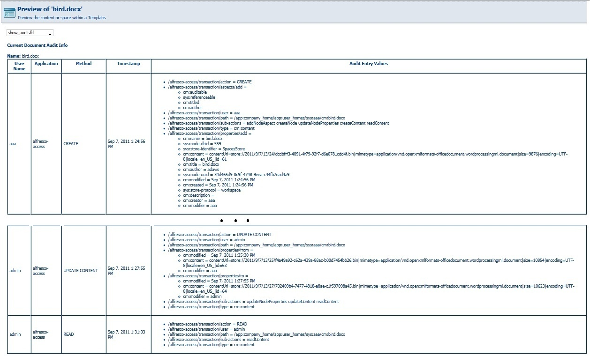
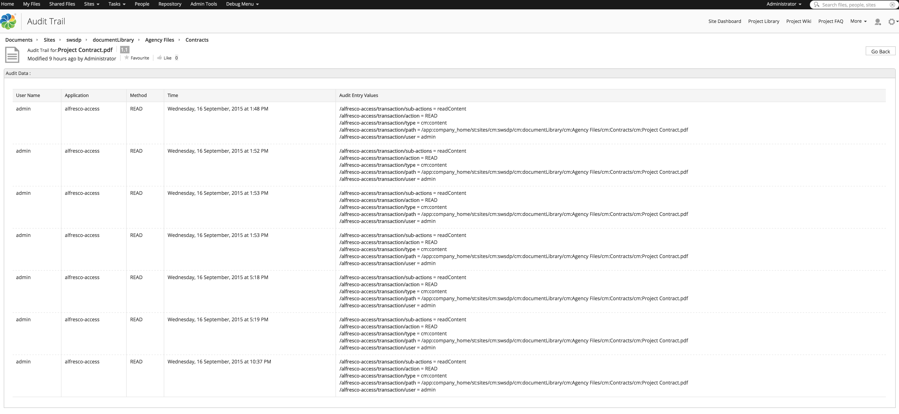
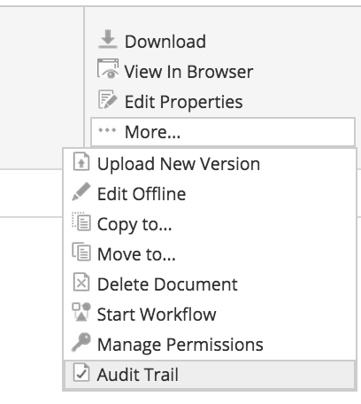
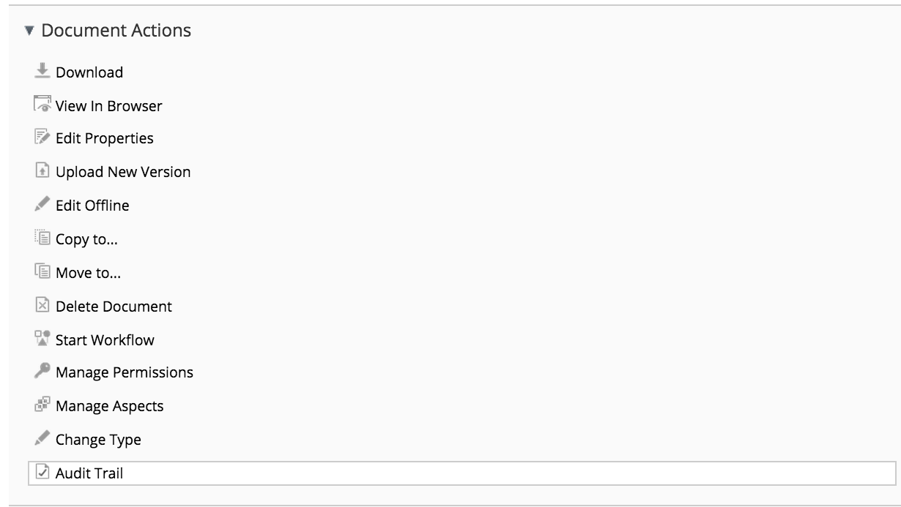

EisenVault takes away the hassle of managing documents by storing them in both electronic and physical forms, enabling smart-search and deploying quick retrieval measures. Our innovative cloud-based document management system can be used in multiple industry sectors, and caters to specific requirements of various job roles. Our vision - to be your preferred partner for electronic and physical document management.
This is EisenVault’s first Aikau plugin and we would like to share our experience building it. While during the days when people used Alfresco Explorer there was an option to view the audit trail for a document using the show_audit.ftl by selecting “Preview in Template”. Below is a screenshot of how it looked -

But there is no such option in Alfresco Share to view those audit data, so I thought of building it. Auditing is by default enabled in Alfresco but the data generation for the same is disabled and to enable this you would have to put in the below property in alfresco-global.properties.
|
|
|
|
On issuing the above command you would get a JSON response something similar -
|
|
You can also query to retrieve the audit events:
|
|
|
|
If you looking for more information about Alfresco Audting you should definitely look here
Aikau Audit Report page
-
The new Aikau Audit report page lets you view the audit trail for each document in the repository as shown below:

-
You can access this page either from the document library action OR from the Document Actions section from the document details page:
 | 
How does it work?
- The AlfList widget makes a call to webscript NodeAuditTrailWebScript with help of the attribute loadDataPublishTopic via the CrudService (using the “ALF_CRUD_GET_ALL” topic) which take the nodeRef as a parameter and this in turn returns the data in JSON format.
- Now to render the list what AlfList loads we need to create a view which is done with the help of AlfListView.
- As the list contains five columns we would be adding same number of HeaderCell for the attribute widgetsForHeader.
- Each row in the data will be represented by Row and each Cell will hold Property to render the value for respective Cell.
- As the last column “Audit Entry Values” holds multiple values the Property widget need to be overridden and you may find this in Property.js
You may find the complete source code for this addon on Github